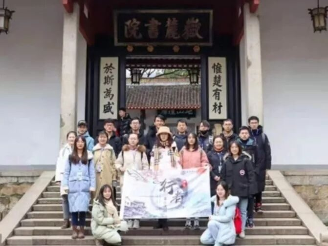
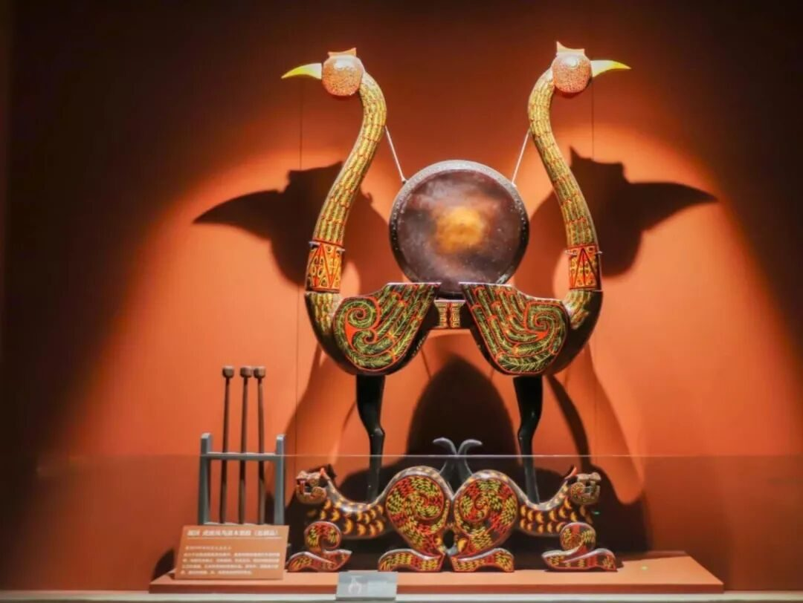

【赋墨沉湘·五】我从远方赶来，赴你一面之约。
一个闲适温情的城市，一条不好寻觅的小巷，一座依山傍水的老城。长沙，我劝你不要太“招摇”，让人深陷其中，无法自拔，从而忘记归途。


◆ ◆ ◆ ◆ ◆
栖神思于岳麓，寄诗情于此
沿着幽深的小径缓缓前行
胸襟随山径拓宽
心绪因蔚蓝的天空而静谧
印证着多年来关于岳麓书院的想象
千年湘绣
抒钟爱之情，传山水之美
马王堆汉墓
彩绘漆棺，色泽如新，流云漫卷
一张纸，一把剪刀
神乎其技的技法
倾注了传承人一生的心血和情感


陈旧的书桌
古朴的煤油灯，简陋的搪瓷杯
色彩斑驳，折射着岁月的光华...
带着赤诚之心，细细感受
那些满怀革命激情的岁月
和一一消散在风里的故事
留给我们的是荡漾在脑海中
无限的 火热的
青春
他们如灿烂的星辰
照耀着现代中国的进程
那份担当与自信
始终在湖湘文化的血液中流淌
把人们的认识和理解
一步步引向、接近了湖湘文化深处

潇湘风云地，山水不夜城
一座城市的味道，尽在时光里
我喜欢镜头里的每个故事
我还记得深夜拖着箱子的疲惫
一个个熬不完的夜，起不来的早
我还记得半夜前来报到的生日蛋糕
我还记得在被地铁闸机拦住时
你们比我还焦急的可爱模样
我还记得这趟旅程中的每丝温情
足够让我回味一生
橘子洲头的屹立
古城墙上的历史
博物馆里的历史底蕴
各种小吃的味蕾冲击
漫步长沙犹如在诗画里行走
在文化里穿越
酝酿出不一样的品位
升腾出不一样的牵挂

有趣的人生
一半是山川湖海
最好的时光在路上
摸着一口袋的开心满载而归
总有些惊奇的际遇
比如说，当我遇见你
行者无疆
我走过你走过的路，也到过你说的远方

来源 | 行者无疆实践团
文字 | 张清雅
排版 | 张清雅
审核 | 段智然 康艳虎 黄玲
行者无疆实践团
QQ：2758025831

随行者一起认识世界
长按二维码